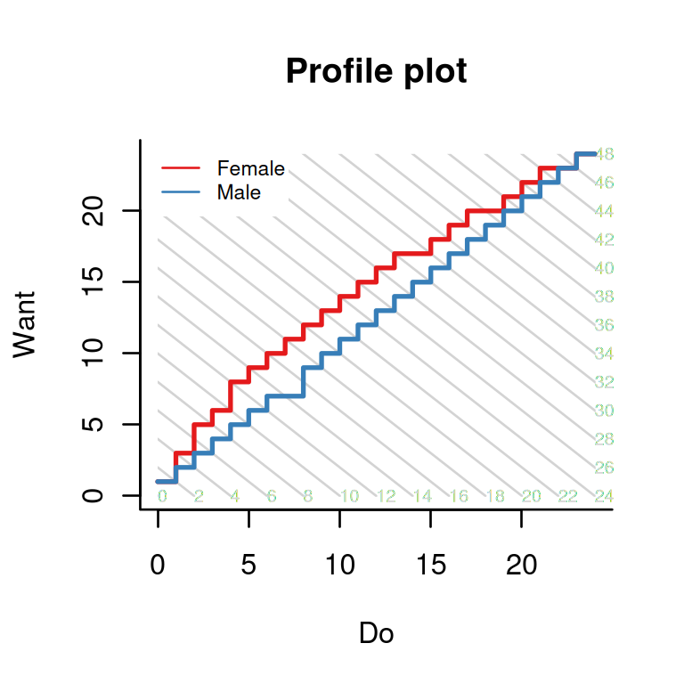
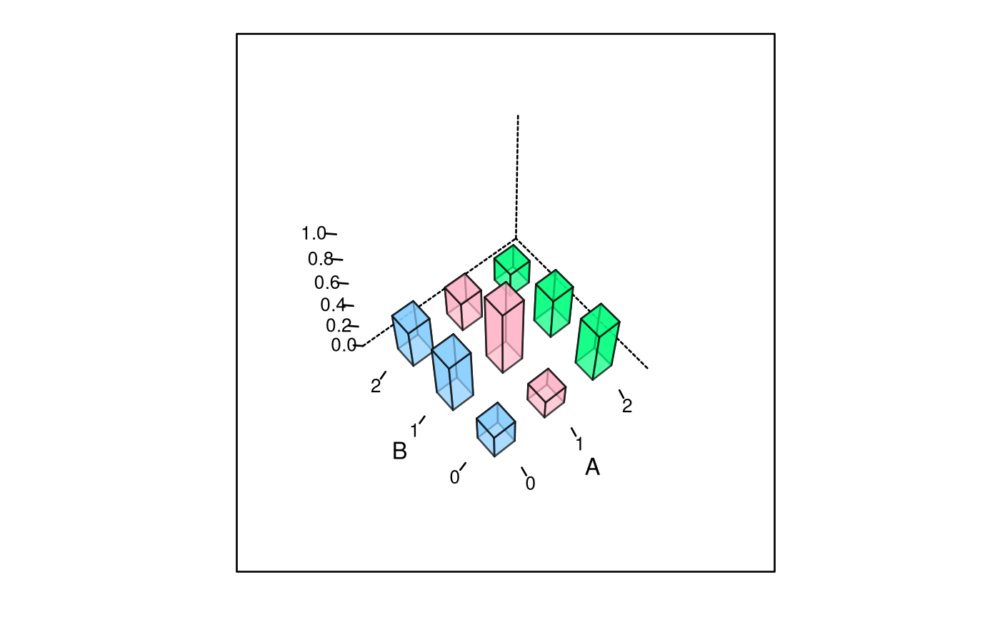
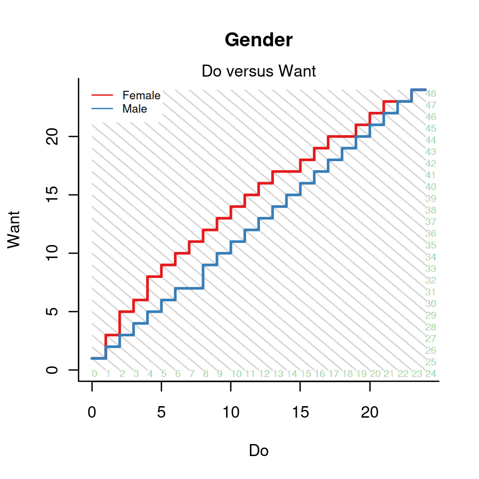

vignettes/profile-plots.Rmd
profile-plots.RmdThe function profile_plot in package dexter produces plots like the following one based on the verbal aggression dataset:

The plot is, as we will try to show, quite informative. However, it is not very easy to understand as it is very condensed and contains some less familiar elements. Furthermore, experience shows that persons who are at ease with complicated formulae or tables may be challenged by a relatively simple graph, or vice versa. May this serve as an excuse for the very elementary level of this vignette.
Let us assume a test of four dichotomous items. The possible sum scores are then 0 through 4. Let the four items be classified into two non-overlapping domains, A and B, with two items each. The following table could be the frequency distribution of a sample of students by their scores on the two domains:
| 0 | 1 | 2 | |
|---|---|---|---|
| 0 | 10 | 20 | 15 |
| 1 | 12 | 40 | 18 |
| 2 | 30 | 24 | 14 |
We never expected to use a 3-dimensional bar plot, ever, but we will make a once-in-a-lifetime exception:
The well-known function, prop.table, can be used to estimate three kinds of probabilities:
The first and the third of these possibilities are illustrated below:

The profile plot does not use any of these three kinds of probabilities. Instead, it computes the probability of each possible response pattern given the total score:
A total score of 0 on the whole test can be achieved in one way: a subscore of 0 on A and a subscore of 0 on B. Hence, the probability, shown with the lightest bar, is 1. The same is true of the maximum score of 4: to gain it, one must score the maximum in both domains. A sum score of 1 or 3 can be achieved in 2 ways each, and there are 3 possibilities for a sum score of 2.
What we do now is identify the pattern with the largest probability given a total score of 0, 1, …, 4, and trace a path through them:
A
The thin gray lines connect all patterns that yield the same total score on the test. The path must visit each of them once: it passes through the modal patterns given a total score of 0, 1, …, 4. We are almost there, there are only two more things to mention:
We have drawn one path so far, but the plot becomes interesting when there are two or more paths to compare
The plots we made are based on observed proportions while dexter uses probabilities predicted by the interaction model or, optionally, the Rasch model
Back to the original profile plot: what does it mean? There are two paths, one for female respondents, the other one for males. The diagonal lines pass through all pairs of scores on “Want to curse, shout,” and “Actually curse, shout” that result in the same overall score on verbally aggressive behavior. The fact that the curve for the females lies consistently to the left and above the curve for males means that, at each level of verbal aggressiveness, they tend to want more but do less.

Speaking in general, the profile plots can be used to investigate whether two (or more) groups of respondents obtain the same test score in the same way. When applied to educational test data, the plots can be used to detect differences in the relative difficulty of (sets of) items for respondents that belong to different groups and are matched on the test score. In some cases, one would associate this to Differential Item Functioning (or DIF). Note however, that profile plots are different from regular procedures to detect DIF; and better. First of all, the procedure is not exploratory but requires its user to provide a meaningful classification of the items which should improve the odds that the results make sense to content-experts. Second, it looks explicitly at relations between items and avoids the erroneous conception of DIF as an item property (Bechger and Maris 2015).
Note that the profile plots got their name from their similarity to profile analysis which was proposed by Norman Verhelst (Verhelst 2012) and suggested by him and his co-workers as a method to test for DIF (Yildirim, Yildirim, and Verhelst 2014). Regular profile analysis is also available in dexter.
Bechger, Timo M., and Gunter Maris. 2015. “A Statistical Test for Differential Item Pair Functioning.” Psychometrika 80 (2): 317–40.
Verhelst, Norman D. 2012. “Profile Analysis: A Closer Look at the PISA 2000 Reading Data.” Scandinavian Journal of Educational Research 56 (3): 315–32. https://doi.org/10.1080/00313831.2011.583937.
Yildirim, Hüseyin H., Selma Yildirim, and Norman Verhelst. 2014. “Profile Analysis as a Generalized Differential Items Functioning Analysis Method.” Education and Science 39: 49–64.